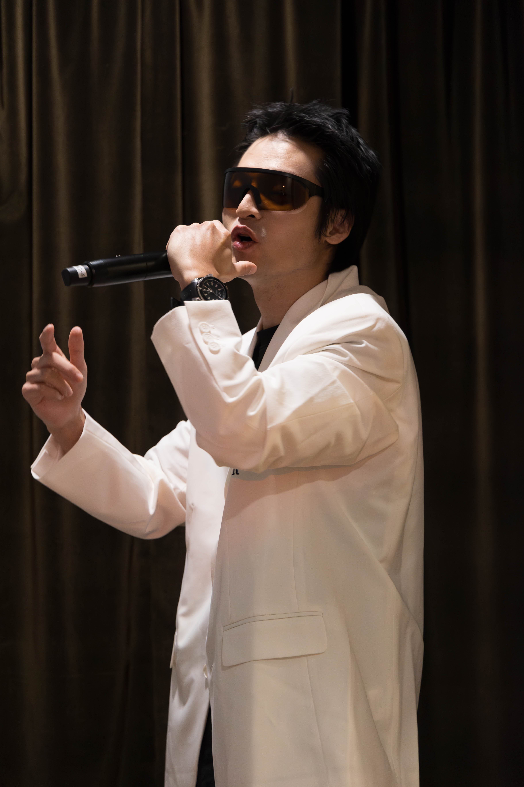

多尺度设计 我从小算到大
记录从小变形线弹性模型走向超弹性大变形、多物理场与参数化设计。

大家好，我叫王敏达，新加坡南洋理工大学博士二年级，主要研究方向为柔性机器人拓扑优化。我擅长Fenics，FenicsX和Firedrake平台的各种求解和优化。我很喜欢打羽毛球，因为在打羽毛球的时候我的手高于我的眼睛，避免了眼高手低的问题。我有很强的ai背景，不会的东西都会问ai。
记录从小变形线弹性模型走向超弹性大变形、多物理场与参数化设计。
大到扇耳光的轰鸣，小到火星撞地球的轻微声响，我们都可以按需模拟出您的受力
这个世界上有多少可能出现的结构，一起爬山吧，蒙着眼睛算梯度那种。
听说现在沾上了ai，以后卖薯条都可以被赋能
这里应该有东西但为什么没有呢？？因为他善。想看扣1，扣到合适数量我就开始更新。
这里边有个超级妙的关于schur补的比喻，必看经典
猛击此处开启成功人生没时间写啊诸位
猛击此处加功德我希望下周的升旗仪式我能去讲
猛击此处敲醒我，我会同步收到提醒哦科研路线图，广告位招租
手上一堆markdown，到时候发一部分
等我把手上的三个工作做完我就整理
这个域名好丑，我要买一个好一点的域名